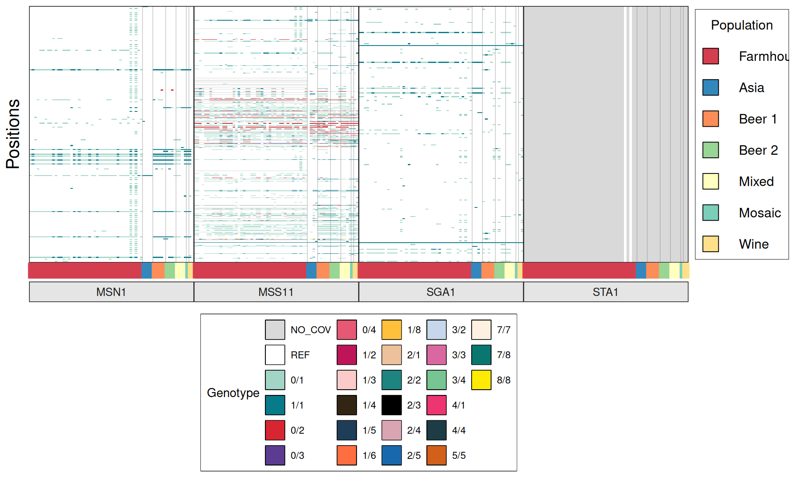
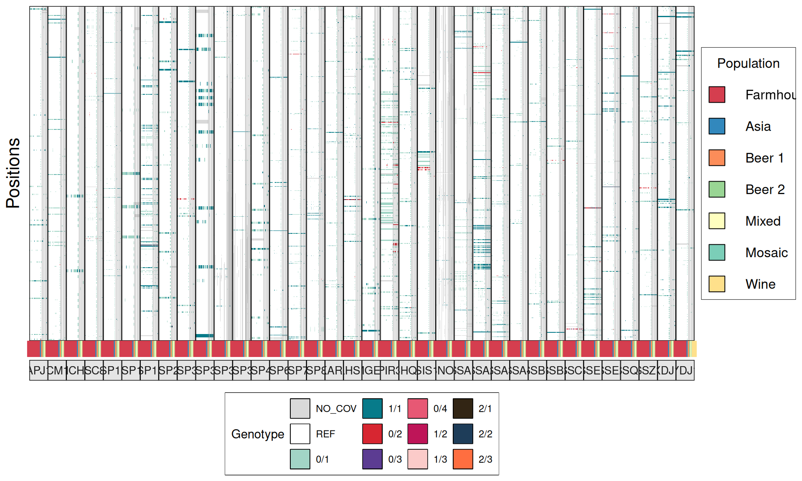

3 Variant Calling
3.1 On this page
Biological insights and take-home messages are at the bottom of the page at section Lesson Learnt: sec-lesson-learnt-feature-selection.
- Here
3.2 Variant Calling
We will now analyse the DNA variants between the sequenced farmhouse yeasts and the reference S. cerevisiae lab strain S288C. Genetic variants will be combined with information from the 151 yeast strains sequenced in Gallone et al 2019 used to reconstruct (kveiks) population structures, levels of heterozygosities, putative regions with Loss Of Heterozygosity (LOH) and the eventual genes affected by LOH.
3.2.1 Reads alignment
Here the steps are the standard I always do:
- align reads to reference genome with bwa mem;
- sort the bam file by read position;
- mark reads duplicates with what used to be picard tools;
- assign read groups, so that each sequencing library is assigned to the right sample (necessary for when I merge the vcf files)
## align reads to reference genome S288C
# align reads
DB=~/00_Brigida_starting_files/variants/Saccharomyces_cerevisiae.EF4.73.dna.chromosome.all.fa
while read line; do
bwa mem -t 72 \
-K 100000000 \
$DB \
../00_trim_reads/$line.R1.tr.fq.gz \
../00_trim_reads/$line.R2.tr.fq.gz \
> $line.S288C.align.sam;
samtools view \
-@ 72 \
-Sb \
$line.S288C.align.sam \
> $line.S288C.align.bam;
samtools sort \
-@ 72 \
$line.S288C.align.bam $line.S288C.align.sort;
rm $line.S288C.align.sam $line.S288C.align.bam;
done < ../sample.lst
## mark duplicates
for file in *.bam; do
~/bin/gatk-4.0.11.0/gatk MarkDuplicates \
--INPUT=$file \
--OUTPUT=$(basename $file .bam).md.bam \
--METRICS_FILE=$(basename $file .bam).md.log \
--CREATE_INDEX=true;
done
# assign read group
while read line; do
~/bin/gatk-4.0.11.0/gatk AddOrReplaceReadGroups \
--INPUT $line.S288C.align.sort.md.bam \
--OUTPUT $line.S288C.align.sort.md.r.bam \
--RGID $line \
--RGPL $line \
--RGLB $line \
--RGPU $line \
--RGSM $line;
done < ../sample.lst3.2.2 Variant Calling
I run HaplotypeCaller in gVCF mode, sample ploidy 2 and calling all the kveiks positions at the same time to reduce the number of false positives.
## run haplotype caller
DB=~/00_Brigida_starting_files/variants/Saccharomyces_cerevisiae.EF4.73.dna.chromosome.all.fa
for i in chr1 chr2 chr3 chr4 chr5 chr6 chr7 chr8 chr9 chr10 chr11 chr12 chr13 chr14 chr15 chr16; do
java -Xmx8g \
-jar ~/bin/GenomeAnalysisTK-3.3-0-g37228af/GenomeAnalysisTK.jar \
--logging_level INFO \
--num_threads 4 \
--analysis_type UnifiedGenotyper \
--reference_sequence $DB \
-I bam_files.list \
-o S288C.variants.$i.gvcf \
--intervals Saccharomyces_cerevisiae.EF4.73.dna.chromosome.$i.interval_list \
--standard_min_confidence_threshold_for_calling 20 \
-stand_emit_conf 30.0 \
--min_base_quality_score 20 \
-glm BOTH \
--sample_ploidy 2 \
--validation_strictness SILENT \
--output_mode EMIT_ALL_SITES &
done
# merge kveiks with with brigida's chromosomes
for i in chr1 chr2 chr3 chr4 chr5 chr6 chr7 chr8 chr9 chr10 chr11 chr12 chr13 chr14 chr15 chr16; do
bcftools merge \
--threads 4 \
--output-type z \
--output all_plusKV.$i.vcf.gz \
kveiks.S288C.variants.$i.gvcf.gz \
../03_Bri_chr/Scer.$i.raw.vcf.gz &
done
# merge all chromosomes together
bcftools concat \
all_plusKV.chr1.vcf.gz \
all_plusKV.chr2.vcf.gz \
all_plusKV.chr3.vcf.gz \
all_plusKV.chr4.vcf.gz \
all_plusKV.chr5.vcf.gz \
all_plusKV.chr6.vcf.gz \
all_plusKV.chr7.vcf.gz \
all_plusKV.chr8.vcf.gz \
all_plusKV.chr9.vcf.gz \
all_plusKV.chr10.vcf.gz \
all_plusKV.chr11.vcf.gz \
all_plusKV.chr12.vcf.gz \
all_plusKV.chr13.vcf.gz \
all_plusKV.chr14.vcf.gz \
all_plusKV.chr15.vcf.gz \
all_plusKV.chr16.vcf.gz \
--output-type z \
--output all_plusKV.vcf.gz \
--threads 643.2.3 Variant filtering and convert to plink bed input
Here I filter for SNPs that are informative for Population Structure analysis. What I do:
- apply hard filters to flag low quality positions;
- select biallelic and high frequency SNPs, SNPs in linkage disequilibrium.
Here I select biallelic SNPs and filter out minor allele frequency. Then I merge my vcf file with the vcf files from your dataset. After, I just invoke plink for generate the input files for FastStructure
# hard filter low quality variants
java -jar ~/bin/GenomeAnalysisTK-3.3-0-g37228af/GenomeAnalysisTK.jar \
--analysis_type VariantFiltration \
--variant all_plusKV.vcf.gz \
--out all_plusKV.fltr.vcf \
--reference_sequence $DB \
--filterExpression "QD < 2.0" --filterName "QD_Low" \
--filterExpression "MQ < 40.0" --filterName "MQ_Low" \
--filterExpression "GQ < 30" --filterName "GQ_Low" \
--filterExpression "AD < 5" --filterName "AD_Low"
# select biallelic loci, filter for MAF and linkage disequilibrium
~/bin/plink_linux_x86_64_20181202/plink \
--make-bed \
--double-id \
--allow-extra-chr \
--indep-pairwise 50 5 0.5 \
--maf 0.05 \
--biallelic-only \
--geno 0.25 \
--vcf all_plusKV.fltr.vcf.gz \
--out all_plusKV.fltr.bi
3.3 Farmhouse yeasts heterozygosity
Farmhouse yeasts contains a high degree of Heterozygosity, comparable to yeast strains from the “mixed” Clade.
# import dataset
kveik_het = read.delim("./data/p01-03/all_plusKV.heterozygous.positions.txt", header = TRUE)
# sort
kveik_het$Pop = factor(kveik_het$Pop,
levels = c("Farmhouse", "Asian", "Beer1", "Beer2", "Bread",
"Mixed", "Mosaic", "Sake", "Wild", "Wine"))
kveik_het$Pop = relevel(kveik_het$Pop, "Farmhouse")
kveik_het$Geographic.origin = ifelse(
kveik_het$Geographic.origin == "Central-E Norway",
"C-E Norway",
kveik_het$Geographic.origin
)
colnames(kveik_het) = c("ID", "Pop", "HET_CT", "Subpopulation", "Geographic.origin")
# mapping swap_yeasts
to_swap = data.frame(
old_name = c("21P1", "17P5", "45P5", "28P1", "28P6"),
new_name = c("21R40", "17R20", "45R38", "28R31", "28R1")
)
# import final clade list
final_clades = read.table(
"./data/p02-04/final_clades_for_pub.txt",
sep = "\t",
header = TRUE,
stringsAsFactors = FALSE
)
# load annotations
tree_annot_raw = read.table("./data/p01-03/genetrees.output.BS.annot-PETER.txt",
sep = "\t",
header = TRUE,
stringsAsFactors = FALSE)
tree_annot_raw = data.frame(tree_annot_raw)
for(k in 1:nrow(to_swap)){
tree_annot_raw$Strain = stringr::str_replace(
tree_annot_raw$Strain,
to_swap[k, "old_name"],
to_swap[k, "new_name"]
)
tree_annot_raw$Name = stringr::str_replace(
tree_annot_raw$Name,
to_swap[k, "old_name"],
to_swap[k, "new_name"]
)
}
# merge with last clade grouping from 20250630
tree_annot = tree_annot_raw %>%
dplyr::left_join(., final_clades, by = "Strain")
tree_annot$Clade = ifelse(tree_annot$niche1 == "farmhouse", "Farmhouse", tree_annot$Clade)
tree_annot$Clade = ifelse(
is.na(tree_annot$Clade) & tree_annot$group == 'beer2',
"Beer2", tree_annot$Clade
)
tree_annot$Clade = ifelse(
is.na(tree_annot$Clade) & tree_annot$group == 'wine',
"Wine", tree_annot$Clade
)
tree_annot$Clade = ifelse(
is.na(tree_annot$Clade) & tree_annot$group == 'asian',
"Asia", tree_annot$Clade
)
tree_annot$Clade = ifelse(is.na(tree_annot$Clade), "Other", tree_annot$Clade)
tree_annot = tree_annot[, -which(colnames(tree_annot) %in% c("niche1", "niche2", "niche3", "group", "seq_name", "Mosaic"))]
colnames(tree_annot) = c("Strain", "ID", "Clade")
tree_annot$ID = stringr::str_replace_all(tree_annot$ID, "x", "X")
# merge
kveik_het = merge(kveik_het, tree_annot, by = "ID")
kveik_het = kveik_het[, which(colnames(kveik_het) %in% c("ID", "HET_CT", "Pop", "Culture", "Subpopulation", "Geographic.origin", "Clade"))]
#------------------------------------------------------------------------------#
## 2.2 - Heterozigous position - all ####
# t-test
tests = kveik_het %>%
dplyr::filter(!(ID %in% c("40R20", "40R1", "40R14", "38R16", "k7R25", "Muri"))) %>%
rstatix::t_test(HET_CT ~ Clade, ref.group = "Farmhouse")
kveik_het$Clade = factor(kveik_het$Clade,
levels = c("Farmhouse", "Asia", "Beer1", "Beer2", "Mixed", "Other", "Wine"))
kveik_het$Clade = relevel(kveik_het$Clade, "Farmhouse")
# plot
p_het = ggplot(kveik_het, aes(x = Clade, y = HET_CT)) +
geom_violin(aes(fill = Clade), alpha = 0.2,
scale = "width",
trim = FALSE) +
geom_point(data = ~dplyr::filter(.x, !(ID %in% c("40R20", "40R1", "40R14", "38R16", "k7R25", "Muri"))),
aes(fill = Clade),
position = position_jitter(width = 0.25),
shape = 21,
alpha = 0.375,
size = 3) +
stat_summary(fun = "median", colour = "red", geom = "crossbar") +
geom_vline(xintercept = 1.5) +
geom_point(data = ~dplyr::filter(.x, ID %in% c("40R20", "40R1", "40R14", "38R16", "k7R25", "Muri")),
aes(fill = "red"),
position = position_jitter(width = 0.25),
shape = 21,
alpha = 0.375,
size = 3) +
geom_text(data = ~dplyr::filter(.x, ID %in% c("40R20", "40R1", "40R14", "38R16", "k7R25", "Muri")),
aes(label = as.character(ID)),
hjust = 0, vjust = 0, color = "red") +
scale_fill_manual(values = c("#2297e6", "#df536b", "#61d04f", "#28e2e5", "#cd0bbc", "grey75", "#bcf60c",
"red")) +
ggpubr::stat_compare_means(method = "anova", label.x = 1.1, label.y = 98000) +
annotate("text", x = 2, y = 95000, label = c(tests$p.adj.signif)[[1]]) +
annotate("text", x = 3, y = 95000, label = c(tests$p.adj.signif)[[2]]) +
annotate("text", x = 4, y = 95000, label = c(tests$p.adj.signif)[[3]]) +
annotate("text", x = 5, y = 95000, label = c(tests$p.adj.signif)[[4]]) +
annotate("text", x = 6, y = 95000, label = c(tests$p.adj.signif)[[5]]) +
annotate("text", x = 7, y = 95000, label = c(tests$p.adj.signif)[[6]]) +
scale_y_continuous(labels = scales::comma,
limits = c(1, 100000)) +
labs(title = "Heterozygosity in yeast populations",
x = "Clade / Niche",
y = "# heterozygous\npositions") +
theme(title = element_blank(),
axis.text.x = element_text(hjust = 0.95, angle = 60, size = 16),
axis.text.y = element_text(size = 16),
axis.title = element_text(size = 18),
legend.position = "none",
panel.background = element_rect(colour = "black", fill = NA),
panel.grid.major.x = element_blank(),
panel.grid.minor.x = element_blank(),
panel.grid.major.y = element_line(colour = "grey75"),
panel.grid.minor.y = element_blank())
#------------------------------------------------------------------------------#
## 2.3 - Heterozigous position - kveiks ####
# t-test
kveik_comp = kveik_het[which(kveik_het$Pop == "Farmhouse" & kveik_het$Subpopulation != "Beer1"), ]
kveik_comp$Subpopulation = "All Farmhouse"
kveik_comp$Geographic.origin = "All Farmhouse"
#kveik_comp$Culture = "All Farmhouse"
kveik_comp = rbind(kveik_comp, kveik_het[which(kveik_het$Pop == "Farmhouse" & kveik_het$Subpopulation != "Beer1"), ])
tests_geo = kveik_comp %>%
dplyr::filter(!(ID %in% c("40R20", "40R1", "40R14", "38R16", "k7R25", "Muri", "39R20"))) %>%
rstatix::t_test(HET_CT ~ Geographic.origin, ref.group = "All Farmhouse")
tests_geo[6, ] = list("HET_CT", "All Farmhouse", "Russia", 37, 1, 0, 0, 1, 1, "ns")
# plot
kveik_comp = kveik_het[which(kveik_het$Pop == "Farmhouse" & kveik_het$Subpopulation != "Beer1"), ]
p_het2 = ggplot(kveik_comp, aes(x = Geographic.origin, y = HET_CT)) +
geom_violin(aes(fill = Geographic.origin), alpha = 0.2,
scale = "width",
trim = FALSE) +
geom_point(data = ~dplyr::filter(.x, !(ID %in% c("40R20", "40R1", "40R14", "38R16", "k7R25", "Muri"))),
aes(fill = Geographic.origin),
position = position_jitter(width = 0.25),
shape = 21,
alpha = 0.375,
size = 3) +
geom_point(data = ~dplyr::filter(.x, ID %in% c("40R20", "40R1", "40R14", "38R16", "k7R25", "Muri")),
aes(fill = "red"),
position = position_jitter(width = 0.25),
shape = 21,
alpha = 0.375,
size = 3) +
stat_summary(fun = "median", colour = "red", geom = "crossbar") +
geom_text(data = ~dplyr::filter(.x, ID %in% c("40R20", "40R1", "40R14", "38R16", "k7R25", "Muri")),
aes(label = as.character(ID)),
hjust = 0, vjust = 0, color = "red") +
scale_fill_manual(values = c("green", "#FFDA00", "orange", "#0571B0", "red", "#A6611A", "#92C5DE")) +
scale_x_discrete(labels = scales::label_wrap(10)) +
scale_y_continuous(labels = scales::comma,
limits = c(1, 100000)) +
ggpubr::stat_compare_means(method = "anova", label.x = 1.1, label.y = 98000) +
annotate("text", x = 1, y = 95000, label = c(tests_geo$p.adj.signif)[[1]]) +
annotate("text", x = 2, y = 95000, label = c(tests_geo$p.adj.signif)[[2]]) +
annotate("text", x = 3, y = 95000, label = c(tests_geo$p.adj.signif)[[3]]) +
annotate("text", x = 4, y = 95000, label = c(tests_geo$p.adj.signif)[[4]]) +
annotate("text", x = 5, y = 95000, label = c(tests_geo$p.adj.signif)[[5]]) +
annotate("text", x = 6, y = 95000, label = c(tests_geo$p.adj.signif)[[6]]) +
labs(x = "Geographic origin") +
theme(title = element_blank(),
axis.text.x = element_text(hjust = 0.95, angle = 60, size = 16),
axis.text.y = element_blank(),
axis.title.x = element_text(size = 18),
axis.title.y = element_blank(),
legend.position = "none",
panel.background = element_rect(colour = "black", fill = NA),
panel.grid.major.x = element_blank(),
panel.grid.minor.x = element_blank(),
panel.grid.major.y = element_line(colour = "grey75"),
panel.grid.minor.y = element_blank())
3.4 Loss Of Heterozygosity (LOH)
# import LOH matrix
LOH_table_10kb = read.delim("./data/p01-03/Vikings.LOH.10kb_win.tab", header = FALSE)
colnames(LOH_table_10kb) = c("strain", "chr", "start", "stop", "n_var")
# format
LOH_table_10kb$chr = factor(
LOH_table_10kb$chr,
levels = c("I", "II", "III", "IV", "V", "VI", "VII", "VIII",
"IX", "X", "XI", "XII", "XIII", "XIV", "XV", "XVI")
)
# relevel
LOH_table_10kb = LOH_table_10kb[which(LOH_table_10kb$strain %in% c(
"41R10", "21R38", "9R40", "17P5", "SortdalEbbe1", "3R11", "21P1", "41R15", "Hornindal1",
"Hornindal2", "1R16", "2R23", "8R19", "Muri",
"k7R25", "38R16", "44R32", "19R18", "44R7", "6R15", "Laerdal2", "7R7", "14R6", "14R30",
"27R17", "28P1", "28P6", "28R21", "28R33", "28R8",
"42R20", "42R31", "45P5", "45R11",
"46R12", "46R37", "16R23", "16R37",
"39R20", "40R14", "40R1", "40R20",
"Granvin1", "Voss1"
)), ]
LOH_table_10kb$strain = factor(
LOH_table_10kb$strain,
levels = c("41R10", "21R38", "9R40", "17P5", "SortdalEbbe1", "3R11", "21P1", "41R15", "Hornindal1",
"Hornindal2", "1R16", "2R23", "8R19", "Muri",
"k7R25", "38R16", "44R32", "19R18", "44R7", "6R15", "Laerdal2", "7R7", "14R6", "14R30",
"27R17", "28P1", "28P6", "28R21", "28R33", "28R8",
"42R20", "42R31", "45P5", "45R11",
"46R12", "46R37", "16R23", "16R37",
"39R20", "40R14", "40R1", "40R20",
"Granvin1", "Voss1")
)
# import coverage dataset
file_list = list.files(
path = "./data/p01-03/01_start_bed/",
pattern = "1kb_cov.bed",
full.names = TRUE,
ignore.case = FALSE
)
# declare average df
average_table = data.frame(
strain = character(),
average = double(),
max = double(),
sd = double(),
stringsAsFactors = FALSE
)
# declare cov df
coverage_table = data.frame(
strain = character(),
chr = character(),
start = integer(),
stop = integer(),
cov = double(),
stringsAsFactors = FALSE
)
# import coverage counts per strain
for(file_to_import in file_list){
tmp_table = read.delim(file_to_import, header = FALSE)
colnames(tmp_table) = c("strain", "chr", "start", "stop", "cov")
tmp_table = tmp_table[which(tmp_table$chr != "ref|NC_001224|"), ]
strain_name = stringr::str_remove(file_to_import, ".align.sort.1kb_cov.bed")
strain_name = stringr::str_remove(strain_name, "./data/p01-03/01_start_bed//")
average_table = rbind(
average_table,
data.frame(
"strain" = strain_name,
"average" = mean(tmp_table$cov),
"max" = max(tmp_table$cov),
"sd" = sd(tmp_table$cov)
)
)
tmp_table = tmp_table[which(tmp_table$cov <= mean(tmp_table$cov)+sd(tmp_table$cov)), ]
tmp_table$stop_y = NA
coverage_table = rbind(coverage_table, tmp_table)
coverage_table[which(coverage_table$strain == strain_name), "stop_y"] = max(coverage_table$cov)
}
# format
coverage_table$chr = factor(
coverage_table$chr,
levels = c("I", "II", "III", "IV", "V", "VI", "VII", "VIII",
"IX", "X", "XI", "XII", "XIII", "XIV", "XV", "XVI")
)
# plot
p_LOH1 = ggplot() +
geom_rect(data = subset(
coverage_table,
chr %in% c("I", "III", "V", "VII", "IX", "XI", "XIII", "XV")),
fill = "grey95",
xmin = 0, xmax = max(coverage_table$stop),
ymin = 0, ymax = max(coverage_table$cov),
alpha = 0.3) +
geom_hline(data = average_table,
aes(yintercept = average),
color = "firebrick") +
geom_line(data = LOH_table_10kb,
aes(x = start, y = n_var),
color = "royalblue4",
linewidth = 0.25) +
scale_fill_manual(values = c("steelblue", "white", "salmon", "grey95")) +
scale_y_continuous(labels = function(x) format(x, big.mark = ",", scientific = FALSE)) +
#scale_y_continuous(limits = c(0, 350)) +
coord_cartesian(expand = FALSE) +
annotation_custom(grid::linesGrob(y = c(0, 0), gp = grid::gpar(lwd = 3))) +
facet_grid2(strain ~ chr,
scales = "free",
space = "free_x",
switch = "both",
strip = strip_themed(
background_y = elem_list_rect(fill = c(
"#0571B0", "#0571B0", "#0571B0", "#0571B0", "#0571B0", "#0571B0", "#0571B0", "#0571B0",
"#0571B0", "#0571B0", "#0571B0", "#0571B0", "#0571B0", "#0571B0",
"#92C5DE", "#92C5DE",
"#92C5DE", "#92C5DE", "#92C5DE", "#92C5DE", "#92C5DE", "#92C5DE", "#92C5DE", "#92C5DE",
"#008470", "#008470", "#008470", "#008470", "#008470", "#008470", "#FFDA00", "#FFDA00",
"#FFDA00", "#FFDA00", "#FBA01D", "#FBA01D", "#FBA01D", "#FBA01D", "#A6611A", "#A6611A",
"#A6611A", "#A6611A", "#51CD34", "#51CD34"
))
)) +
theme(plot.title = element_blank(),
axis.title = element_blank(),
axis.ticks = element_blank(),
axis.text = element_blank(),
legend.position = "none",
panel.background = element_blank(),
panel.border = element_blank(),
panel.spacing = unit(0, "lines"),
strip.background = element_blank(),
strip.text.x = element_text(size = 8),
strip.text.y.left = element_text(size = 8, angle = 0, face = "bold"))
p_LOH13.5 Search for signature of Culture #28 hybridization
We look for variants in common between strains
# split vcf in samples
for sample in `bcftools query -l kveiks.fltr.CE-Norway.vcf`; do
bcftools view -c1 -Oz -s $sample -o kveiks.fltr.CE-Norway.$sample.vcf kveiks.fltr.CE-Norway.vcf &
done
# normalize and get positions Culture #28
for sample in 28P1 28P6 28R21 28R33 28R8; do
bcftools norm -m-any kveiks.fltr.CE-Norway.$sample.vcf \
| bcftools norm --check-ref w -f ../00_ref_genomes/Scer.fa \
| bcftools annotate -Ob -x 'ID' -I +'%CHROM:%POS:%REF:%ALT' \
> kveiks.fltr.CE-Norway.$sample.bcf ;
bcftools index kveiks.fltr.CE-Norway.$sample.bcf;
bcftools view kveiks.fltr.CE-Norway.$sample.bcf \
| cut -f3 | grep -v "^##" | grep -v "^ID" \
> kveiks.fltr.CE-Norway.$sample.lst
done
# get Culture #16 positions
for sample in 16R23 16R37 46R12 46R37; do
bcftools norm -m-any kveiks.fltr.Lithuania.$sample.vcf \
| bcftools norm --check-ref w -f ../00_ref_genomes/Scer.fa \
| bcftools annotate -Ob -x 'ID' -I +'%CHROM:%POS:%REF:%ALT' \
> kveiks.fltr.Lithuania.$sample.bcf ;
bcftools index kveiks.fltr.Lithuania.$sample.bcf;
bcftools view kveiks.fltr.Lithuania.$sample.bcf \
| cut -f3 | grep -v "^##" | grep -v "^ID" \
> kveiks.fltr.Lithuania.$sample.lst
donelist_28R31 = read.delim("./data/p01-03/kveiks.fltr.CE-Norway.28P1.lst", header = FALSE)
list_28R1 = read.delim("./data/p01-03/kveiks.fltr.CE-Norway.28P6.lst", header = FALSE)
list_28R21 = read.delim("./data/p01-03/kveiks.fltr.CE-Norway.28R21.lst", header = FALSE)
list_28R33 = read.delim("./data/p01-03/kveiks.fltr.CE-Norway.28R33.lst", header = FALSE)
list_28R8 = read.delim("./data/p01-03/kveiks.fltr.CE-Norway.28R8.lst", header = FALSE)
UpSetR::upset(
UpSetR::fromList(
list(
`28R1` = list_28R1$V1,
`28R8` = list_28R8$V1,
`28R21` = list_28R21$V1,
`28R31` = list_28R31$V1,
`28R33` = list_28R33$V1)
),
order.by = "freq",
keep.order = TRUE
)
list_16R23 = read.delim("./data/p01-03/kveiks.fltr.Lithuania.16R23.lst", header = FALSE)
list_16R37 = read.delim("./data/p01-03/kveiks.fltr.Lithuania.16R37.lst", header = FALSE)
list_46R12 = read.delim("./data/p01-03/kveiks.fltr.Lithuania.46R12.lst", header = FALSE)
list_46R37 = read.delim("./data/p01-03/kveiks.fltr.Lithuania.46R37.lst", header = FALSE)
UpSetR::upset(
UpSetR::fromList(
list(
`16R23` = list_16R23$V1,
`16R37` = list_16R37$V1,
`46R12` = list_46R12$V1,
`46R37` = list_46R37$V1)
),
order.by = "freq",
keep.order = TRUE
)
Let’s try to phase Culture 28 with the predict correct parents and with the wrong parents. If the phased genome with the correct parents have significant more phased SNPs than the one with the wrong parents, maybe we can infer that Culture #28 is indeed an hybrid.
correct parents 28R21 28P6 28R33
wrong parents 28R21 28P1 28R8 28R21 28P1 27R17 28R21 28R8 27R17 28R21 28P6 27R17
DB=~/00_Brigida_starting_files/variants/Saccharomyces_cerevisiae.EF4.73.dna.chromosome.all.fa
# phase with Whatshap
whatshap phase -o phased.vcf.gz --reference=$DB culture28.vcf.gz 28R21_28P6_28R33.align.bam
whatshap phase -o phased.wrongparents1.vcf.gz --reference=$DB culture28.wrongparents1.vcf.gz 28R21_28P1_28R8.align.bam
whatshap phase -o phased.wrongparents2.vcf.gz --reference=$DB culture28.wrongparents2.vcf.gz 28R21_28P1_27R17.align.bam
whatshap phase -o phased.wrongparents3.vcf.gz --reference=$DB culture28.wrongparents3.vcf.gz 28R21_28R8_27R17.align.bam
whatshap phase -o phased.wrongparents4.vcf.gz --reference=$DB culture28.wrongparents4.vcf.gz 28R21_28P6_27R17.align.bam
# generate tabular output for plotting
python3.6 Vikings.culture_phasing_summary.py --input culture28.vcf.gz --name 28R21_28P6_28R33
python3.6 Vikings.culture_phasing_summary.py --input culture28.wrongparents1.vcf.gz --name 28R21_28P1_28R8
python3.6 Vikings.culture_phasing_summary.py --input culture28.wrongparents2.vcf.gz --name 28R21_28P1_27R17
python3.6 Vikings.culture_phasing_summary.py --input culture28.wrongparents3.vcf.gz --name 28R21_28R8_27R17
python3.6 Vikings.culture_phasing_summary.py --input culture28.wrongparents4.vcf.gz --name 28R21_28P6_27R17# import
phased = read.delim("./data/p01-03/culture28.phasing.txt")
# melt
phased_melted = reshape2::melt(phased)
# plot
ggplot(phased_melted, aes(x = variable, y = value)) +
geom_bar(aes(fill = variable), color = "grey45", stat = "identity") +
geom_text(aes(label = value), vjust = 0) +
scale_fill_manual(values = c("firebrick", "steelblue1", "steelblue3", "steelblue4")) +
facet_grid(trios ~ chr) +
theme_bw() +
theme(axis.title = element_blank(),
axis.text.y = element_text(size = 16),
axis.text.x = element_text(size = 16, angle = 90, hjust = 1, vjust = 0.5),
legend.position = "none")
3.6 Genome Domestication Signature
Now we try to identify genetic signatures in the Kveiks lineage that hints to genome domestication or potential interesting brewing and industrial phenotypes. The idea is to look for the genes and the respective alleles involved in: copper tolerance, production of Phenolic Off-Flavours, maltose/maltotriose metabolism, ethanol resistance, amilase activity, glycerol production, temperature tolerance, heat-shock proteins, sulfites production, flocculation, desiccation tolerance, presence of Killer Toxins.
To achieve this we follow an approach based on sequence similarity search, variant calling and- based and phylogeny based:
- we will look for genes involved in industrial phenotypes but absent in S288C with a sequence similarity search.
- we will look at loss of function (internal premature stop codons and frame-shifts) for genes involved in industrial phenotypes.
- we will look at Kveiks allelic variants and compare them to the variaat sin other industrial yeast strains to discover conserved patterns.
- we will cluster phylogenetically kveiks and other industrial strains in a phenotype-wise manner.
3.6.1 Identifying genes missing in S288C
Some genes involved in industrial phenotypes are absent in S288C. In order to discover their presence in the sequenced kveiks, we will download the protein sequences of the genes of interest from SGD (https://www.yeastgenome.org/) and perform a sequence similarity search against the predicted proteins for each kveik strain.
# create protein databases
for file in *fasta; do makeblastdb -dbtype prot -in $file; done
## BLASTp
# EthanolResistance
for GENE in MPR1; do
for file in ../00_prot_DB/*fasta; do
blastp -db $file -query EthanolResistance.$GENE.aa.fa \
-out $GENE.$(basename $file .fasta).BLASTp.ER \
-num_threads 8 -outfmt 6 -threshold 0.9 -qcov_hsp_perc 0.7;
done;
done
# Amilase activity
for GENE in STA1 STA2; do
for file in ../00_prot_DB/*fasta; do
blastp -db $file -query AmilaseActivity.$GENE.aa.fa \
-out $GENE.$(basename $file .fasta).BLASTp.AA \
-num_threads 8 -outfmt 6 -threshold 0.9 -qcov_hsp_perc 0.7;
done;
done
# KillerToxin
for TOXIN in KHM1 KHR1 KHS1; do
for file in ../00_prot_DB/*fasta; do
blastp -db $file -query KillerToxins.$TOXIN.aa.fa \
-out $TOXIN.$(basename $file .fasta).BLASTp.KT \
-num_threads 8 -outfmt 6 -threshold 0.9 -qcov_hsp_perc 0.7;
done;
done3.6.2 Annotate variants
We use SnpEff to annotate variants effect.
To run SnpEff, first we need to add reference S288C genome to snpEff. To do so, we modify the config file: ~/bin/snpEff/snpEff.config. by adding teh following lines:
# S288C GENOME
Scere64K: Scere64KThe, we copy the proteins, transcripts and fasta files to ~/bin/snpEff/data.
and build the reference database:
Now we can run SnpEff on a subset of variants composed by the kveiks strains plus the 22 additional industrial strains that we used as comparing in the previous analyses.
# select species for genome domestication
~/bin/bcftools-1.9/bcftools view \
--samples-file species_list.lst \
--force-samples \
--threads 16 \
--min-alleles 2 \
--output-type z ../08_GATK_variants3.3/all_plusKV.fltr.backup.vcf.gz \
> all_plusKV.fltr.backup.reduced.vcf.gz
# annotate variants
java -jar ~/bin/snpEff/snpEff.jar eff \
Scere64K \
all_plusKV.fltr.backup.reduced.vcf.gz \
> all_plusKV.fltr.backup.reduced.snpEff.vcf;
mv snpEff_genes.txt all_plusKV.fltr.backup.reduced.snpEff_genes.txt;
mv snpEff_summary.html all_plusKV.fltr.backup.reduced.vcf.snpEff_summary.html;3.6.3 Parse variants
Now we can select the subset of variants that falls between gene of interest for industrial applications.
# select variants
while read line; do
CAT=$(echo $line | cut -f 1 -d " ");
GENE=$(echo $line | cut -f 2 -d " ");
CHR=$(echo $line | cut -f 4 -d " ");
START=$(echo $line | cut -f 5 -d " ");
STOP=$(echo $line | cut -f 6 -d " ");
tabix all_plusKV.fltr.backup.reduced.snpEff.vcf.gz \
"${CHR}":"${START}"-"${STOP}" > $CAT.$GENE.variants.vcf;
done < Domestication.genes.windows.lst
# reformat output for plotting
for DIR in 0[1-9]* 1[0-2]*; do
for file in $DIR/*.vcf; do
python3.5 Vikings_domesticationVCFparser.py \
--input $file \
--samples vcf_sample_positions.txt;
done \
| sed "s|$DIR/||g" \
| perl -ne '@a = <>; print sort { length $b <=> length $a } @a' \
> variant."${DIR}"_all.tab &
done
while read line; do
for file in variants.*_all.tab; do
OLD=$(echo $line | cut -f 2 -d " ");
NEW=$(echo $line | cut -f 3 -d " ");
sed -i "s/$OLD/$NEW/g" $file;
done;
done < Domestication.genes.windows.lst Let’s plot them.
# plot
phenotypes = list(
"01_coppertolerance",
"02_POF",
"03_maltosemaltotriose",
"04_ethanolresistance",
"05_amilaseactivity",
"06_glycerol",
"07_temperaturetolerance",
"08_heatshock",
"09_sulfites",
"10_flocculation",
"11_dessication",
"12_killertoxin"
)
color_list = c(
"grey85", "white", "#a2d5c6", "#077b8a", "#d72631", "#5c3c92",
"#e75874", "#be1558", "#fbcbc9", "#322514", "#1e3d59", "#ff6e40",
"#ffc13b", "#ecc19c", "#1e847f", "#000000", "#d9a5b3", "#1868ae",
"#c6d7eb", "#da68a0", "#77c593", "#ed3572", "#1d3c45", "#d2601a",
"#fff1e1", "#097770", "#ffea04", "#b85042", "#ffcce7", "#daf2dc",
"#e1dd72", "#a8c66c", "#1b6535"
)
plot_list = list()
for (i in 1:length(phenotypes)){
name = phenotypes[i]
file = paste0("./data/p01-03/variants.", name, "_all.tab")
# dataset = read.delim(file, header = FALSE, fill = TRUE)
dataset = read.delim(file, header = FALSE)
dataset$V3 = factor(
dataset$V3,
levels = c(
"14R30", "14R6", "16R23", "16R37", "17P5", "19R18", "1R16", "21P1", "21R38", "27R17", "28P1",
"28P6", "28R21", "28R33", "28R8", "2R23", "38R16", "39R20", "3R11", "40R14", "40R1", "40R20",
"41R10", "41R15", "42R20", "42R31", "44R32", "44R7", "45P5", "45R11", "46R12", "46R37", "6R15",
"7R7", "8R19", "9R40", "Granvin1", "Hornindal1", "Hornindal2", "k7R25", "Laerdal2", "Muri", "SortdalEbbe1",
"Voss1", "X5000", "X5009", "X6004", "x97", "X1002", "X1014", "X1030", "X1129", "X5508", "X1007",
"X1118", "X1148", "X7078", "X1011", "X1091", "X1111", "X1119", "X8003", "X35", "X1046", "X4037", "X4051"
)
)
dataset$V6 = factor(
dataset$V6,
levels = c(
"NO_COV", "REF", "0/1", "1/1", "0/2", "0/3",
"0/4", "0/6", "1/2", "1/3", "1/4", "1/5",
"1/6", "1/8", "2/1", "2/2", "2/3", "2/4",
"2/5", "3/1", "3/2", "3/3", "3/4", "4/1",
"4/3", "4/4", "5/1", "5/5", "5/6", "7/7",
"7/8", "8/8", "./."
)
)
### create the plot
p1 = ggplot(dataset, aes(V3, V5)) +
geom_tile(aes(fill = V6)) +
geom_vline(aes(xintercept = 44.5), color = "grey50", size = 0.125) +
geom_vline(aes(xintercept = 48.5), color = "grey50", size = 0.125) +
geom_vline(aes(xintercept = 53.5), color = "grey50", size = 0.125) +
geom_vline(aes(xintercept = 57.5), color = "grey50", size = 0.125) +
geom_vline(aes(xintercept = 61.5), color = "grey50", size = 0.125) +
geom_vline(aes(xintercept = 62.5), color = "grey50", size = 0.125) +
scale_fill_manual(values = color_list) +
coord_cartesian(expand = FALSE) +
facet_wrap(~V2, nrow = 1, scales = "free",
strip.position = "bottom") +
labs(fill = "Genotype",
y = "Positions") +
theme(plot.title = element_blank(),
axis.ticks.y = element_blank(),
axis.ticks.x = element_line(
size = 2,
colour = c(
"#D53E4F", "#D53E4F", "#D53E4F", "#D53E4F", "#D53E4F", "#D53E4F", "#D53E4F", "#D53E4F",
"#D53E4F", "#D53E4F", "#D53E4F", "#D53E4F", "#D53E4F", "#D53E4F", "#D53E4F", "#D53E4F",
"#D53E4F", "#D53E4F", "#D53E4F", "#D53E4F", "#D53E4F", "#D53E4F", "#D53E4F", "#D53E4F",
"#D53E4F", "#D53E4F", "#D53E4F", "#D53E4F", "#D53E4F", "#D53E4F", "#D53E4F", "#D53E4F",
"#D53E4F", "#D53E4F", "#D53E4F", "#D53E4F", "#D53E4F", "#D53E4F", "#D53E4F", "#D53E4F",
"#D53E4F", "#D53E4F", "#D53E4F", "#D53E4F", "#3288BD", "#3288BD", "#3288BD", "#3288BD",
"#FC8D59", "#FC8D59", "#FC8D59", "#FC8D59", "#FC8D59", "#99D594", "#99D594", "#99D594",
"#99D594", "#FFFFBF", "#FFFFBF", "#FFFFBF", "#FFFFBF", "#7BCEB8", "#FEE08B", "#FEE08B",
"#FEE08B"
)
),
axis.ticks.length.x = unit(1, "lines"),
axis.title.x = element_blank(),
axis.title.y = element_text(size = 16),
axis.text.x = element_blank(),
axis.text.y = element_blank(),
legend.box.background = element_rect(fill = NA, colour = "black"),
legend.key = element_rect(fill = NA, colour = "black"),
legend.position = "bottom",
panel.background = element_blank(),
panel.spacing = unit(-0.2, "lines"),
panel.border = element_rect(colour = "black", fill = NA),
strip.background = element_rect(colour = "black", fill = "grey90"),
strip.placement = "outside",
strip.text.x = element_text(size = 10))
### Construct species tables
# Construct the 14 grobs - 7 symbols and 7 labels
L1 = rectGrob(height = .5, width = .5, gp = gpar(fill = "#D53E4F", col = "black"))
L2 = rectGrob(height = .5, width = .5, gp = gpar(fill = "#3288BD", col = "black"))
L3 = rectGrob(height = .5, width = .5, gp = gpar(fill = "#FC8D59", col = "black"))
L4 = rectGrob(height = .5, width = .5, gp = gpar(fill = "#99D594", col = "black"))
L5 = rectGrob(height = .5, width = .5, gp = gpar(fill = "#FFFFBF", col = "black"))
L6 = rectGrob(height = .5, width = .5, gp = gpar(fill = "#7BCEB8", col = "black"))
L7 = rectGrob(height = .5, width = .5, gp = gpar(fill = "#FEE08B", col = "black"))
T1 = textGrob("Farmhouse", x = .2, just = "left")
T2 = textGrob("Asia", x = .2, just = "left")
T3 = textGrob("Beer 1", x = .2, just = "left")
T4 = textGrob("Beer 2", x = .2, just = "left")
T5 = textGrob("Mixed", x = .2, just = "left")
T6 = textGrob("Mosaic", x = .2, just = "left")
T7 = textGrob("Wine", x = .2, just = "left")
# Construct a gtable - 2 columns X 8 rows
leg = gtable(width = unit(c(1, 2), "cm"),
height = unit(c(1, 1, 1, 1, 1, 1, 1, 1), "cm"))
leg = gtable_add_grob(leg, rectGrob(gp = gpar(fill = NA, col = "black")),
t = 1, l = 1, b = 8, r = 2)
# gtable_show_layout(leg)
# Place the 14 grob into the table
leg = gtable_add_grob(leg, L1, t=2, l=1)
leg = gtable_add_grob(leg, L2, t=3, l=1)
leg = gtable_add_grob(leg, L3, t=4, l=1)
leg = gtable_add_grob(leg, L4, t=5, l=1)
leg = gtable_add_grob(leg, L5, t=6, l=1)
leg = gtable_add_grob(leg, L6, t=7, l=1)
leg = gtable_add_grob(leg, L7, t=8, l=1)
leg = gtable_add_grob(leg, T1, t=2, l=2)
leg = gtable_add_grob(leg, T2, t=3, l=2)
leg = gtable_add_grob(leg, T3, t=4, l=2)
leg = gtable_add_grob(leg, T4, t=5, l=2)
leg = gtable_add_grob(leg, T5, t=6, l=2)
leg = gtable_add_grob(leg, T6, t=7, l=2)
leg = gtable_add_grob(leg, T7, t=8, l=2)
# Give it a title (if needed)
leg = gtable_add_grob(leg, textGrob("Population"), t = 1, l = 1, r = 2)
# Get the ggplot grob for plot1
g = ggplotGrob(p1)
# Get the position of the panel,
# add a column to the right of the panel,
# put the legend into that column,
# and then add another spacing column
pos = g$layout[grepl("panel", g$layout$name), c('t', 'l')]
g = gtable_add_cols(g, sum(leg$widths), tail(pos$l, n =1))
g = gtable_add_grob(g, leg, t = pos$t[1], l = tail(pos$l, n =1) + 1)
g = gtable_add_cols(g, unit(6, "pt"), tail(pos$l, n =1))
# Draw it
plot_list[[i]] = g
}



TPS3 238G>A : 41 / 44 Farmhouse yeasts 2500A>G : 42 / 44 Farmhouse yeasts
AGT1 / MAL11 1175_1176insT 1772delA : 38 / 44 Farmhouse yeasts 491AAG>TTA 1236C>G
NTH1 1213C>T (Leu405Phe) : 38 / 44 Farmhouse yeasts
ATH1 3394A>G, Asn1132Asp : 3434A>G, Ser1145Asn : 3596A>G; Asn1199Ser :
3.6.4 Identify disrupted genes
From the annotate variants, we can easily filter disrupted genes (variants with HIGH effect: i.e. premature stop codons and frameshifts), and look for patterns of disrupted “pathways” among kveiks and other industrial yeasts.
# import
dataset = read.delim("./data/p01-03/variants.stopcodons.ready.tab", header = FALSE)
# reformat dataset
dataset$V4 = factor(
dataset$V4,
levels = c(
"X4051", "X4037", "X1046", "X35", "X8003", "x1119", "X1111", "X1091", "X1011", "x7078-B", "X1148",
"X1118", "X1007", "X5508", "x1129", "X1030", "X1014", "X1002", "x97", "X6004", "X5009", "X5000", "Voss1",
"SortdalEbbe1", "Muri", "Laerdal2", "k7R25", "Hornindal2", "Hornindal1", "Granvin1", "9R40", "8R19", "7R7",
"6R15", "46R37", "46R12", "45R11", "45P5", "44R7", "44R32", "42R31", "42R20", "41R15", "41R10", "40R20",
"40R1", "40R14", "3R11", "39R20", "38R16", "2R23", "28R8", "28R33", "28R21", "28P6", "28P1", "27R17",
"21R38", "21P1", "1R16", "19R18", "17P5", "16R37", "16R23", "14R6", "14R30"
)
)
dataset$V1 = factor(
dataset$V1,
levels = c(
"Copper tolerance", "POF", "maltose/maltotriose", "ethanol tolerance", "amylase activity",
"glycerol", "temperature tolerance", "heat-shock", "sulfites", "flocculation", "dessication",
"killer toxin"
)
)
# label wrapper function
label_wrap_gen = function(width = 25) {
function(variable, value) {
laply(strwrap(as.character(value), width=width, simplify=FALSE),
paste, collapse="\n")
}
}
# plot
p1 = ggplot(dataset) +
geom_tile(aes(x = V3, y = V4, fill = V6), color = "grey75") +
scale_fill_gradient(low = "white", high = "red") +
facet_grid(~V1, scales = "free", space = "free_x",
labeller=label_wrap_gen(width = 10)) +
labs(title = "Premature stop codons distribution",
x = "Genes",
y = "Strains") +
theme(plot.title = element_blank(),
axis.ticks.x = element_blank(),
axis.ticks.y = element_line(
size = 2.5,
colour = c(
"#FEE08B", "#FEE08B", "#FEE08B", "#7BCEB8", "#FFFFBF", "#FFFFBF", "#FFFFBF", "#FFFFBF",
"#FFFFBF", "#99D594", "#99D594", "#99D594", "#99D594", "#FC8D59", "#FC8D59", "#FC8D59",
"#FC8D59", "#FC8D59", "#3288BD", "#3288BD", "#3288BD", "#3288BD", "#D53E4F", "#D53E4F",
"#D53E4F", "#D53E4F", "#D53E4F", "#D53E4F", "#D53E4F", "#D53E4F", "#D53E4F", "#D53E4F",
"#D53E4F", "#D53E4F", "#D53E4F", "#D53E4F", "#D53E4F", "#D53E4F", "#D53E4F", "#D53E4F",
"#D53E4F", "#D53E4F", "#D53E4F", "#D53E4F", "#D53E4F", "#D53E4F", "#D53E4F", "#D53E4F",
"#D53E4F", "#D53E4F", "#D53E4F", "#D53E4F", "#D53E4F", "#D53E4F", "#D53E4F", "#D53E4F",
"#D53E4F", "#D53E4F", "#D53E4F", "#D53E4F", "#D53E4F", "#D53E4F", "#D53E4F", "#D53E4F",
"#D53E4F", "#D53E4F"
)
),
axis.ticks.length.y = unit(1, "lines"),
axis.title = element_blank(),
axis.text.x = element_text(angle = 90, hjust = 1, vjust = 0.5),
legend.position = "none",
panel.background = element_blank(),
panel.spacing = unit(-0.2, "lines"),
panel.border = element_rect(colour = "black", fill = NA),
strip.background = element_rect(colour = "NA", fill = "NA"),
strip.placement = "outside",
strip.text = element_text(size = 10, angle = 90, vjust = 0.5, hjust = 0))
### Construct species tables
# Construct the 14 grobs - 7 symbols and 7 labels
L1 = rectGrob(height = .5, width = .5, gp = gpar(fill = "#D53E4F", col = "black"))
L2 = rectGrob(height = .5, width = .5, gp = gpar(fill = "#3288BD", col = "black"))
L3 = rectGrob(height = .5, width = .5, gp = gpar(fill = "#FC8D59", col = "black"))
L4 = rectGrob(height = .5, width = .5, gp = gpar(fill = "#99D594", col = "black"))
L5 = rectGrob(height = .5, width = .5, gp = gpar(fill = "#FFFFBF", col = "black"))
L6 = rectGrob(height = .5, width = .5, gp = gpar(fill = "#7BCEB8", col = "black"))
L7 = rectGrob(height = .5, width = .5, gp = gpar(fill = "#FEE08B", col = "black"))
T1 = textGrob("Kveik", x = .2, just = "left")
T2 = textGrob("Asia", x = .2, just = "left")
T3 = textGrob("Beer 1", x = .2, just = "left")
T4 = textGrob("Beer 2", x = .2, just = "left")
T5 = textGrob("Mixed", x = .2, just = "left")
T6 = textGrob("Mosaic", x = .2, just = "left")
T7 = textGrob("Wine", x = .2, just = "left")
# Construct a gtable - 2 columns X 8 rows
leg = gtable(width = unit(c(1, 2), "cm"),
height = unit(c(1, 1, 1, 1, 1, 1, 1, 1), "cm"))
leg = gtable_add_grob(leg, rectGrob(gp = gpar(fill = NA, col = "black")),
t = 1, l = 1, b = 8, r = 2)
# gtable_show_layout(leg)
# Place the 14 grob into the table
leg = gtable_add_grob(leg, L1, t=2, l=1)
leg = gtable_add_grob(leg, L2, t=3, l=1)
leg = gtable_add_grob(leg, L3, t=4, l=1)
leg = gtable_add_grob(leg, L4, t=5, l=1)
leg = gtable_add_grob(leg, L5, t=6, l=1)
leg = gtable_add_grob(leg, L6, t=7, l=1)
leg = gtable_add_grob(leg, L7, t=8, l=1)
leg = gtable_add_grob(leg, T1, t=2, l=2)
leg = gtable_add_grob(leg, T2, t=3, l=2)
leg = gtable_add_grob(leg, T3, t=4, l=2)
leg = gtable_add_grob(leg, T4, t=5, l=2)
leg = gtable_add_grob(leg, T5, t=6, l=2)
leg = gtable_add_grob(leg, T6, t=7, l=2)
leg = gtable_add_grob(leg, T7, t=8, l=2)
# Give it a title (if needed)
leg = gtable_add_grob(leg, textGrob("Population"), t = 1, l = 1, r = 2)
# Get the ggplot grob for plot1
g = ggplotGrob(p1)
# Get the position of the panel,
# add a column to the right of the panel,
# put the legend into that column,
# and then add another spacing column
pos = g$layout[grepl("panel", g$layout$name), c('t', 'l')]
g = gtable_add_cols(g, sum(leg$widths), tail(pos$l, n =1))
g = gtable_add_grob(g, leg, t = pos$t[1], l = tail(pos$l, n =1) + 1)
g = gtable_add_cols(g, unit(6, "pt"), tail(pos$l, n =1))
# Draw it
grid.newpage()
grid.draw(g)3.6.5 Phylogenetic relationships
Since it is difficult to eye-ball patterns of distributions of variants among strains by eye, we can use a phylogeny approach to visualize these patterns and genetic distances. The idea behind this, is to infer phylogenetic relationships based only ina small set of genes involved in a particular phenotype. While these signals are lost in a massive multigene phylogenetic analysis, they still can be informative and give hints on how to cluster strains based on their industrial phenotypes.
The protocol we will apply is the following:
- For each strain of interest (kviks + 22 industrial), generate the consensus fasta file from the aligned variants.
- Generate gene alignments.
- Concatenate all the alignments for each of the 12 industrial phenotypes of interest.
- Build a Maximum-Likelihood phylogenetic tree with IQtree.
SAMPLES="14R30 14R6 16R23 16R37 17P5 19R18 1R16 21P1 21R38 27R17 28P1 28P6 28R21 28R33 28R8 2R23 38R16 39R20 3R11 40R14 40R1 40R20 41R10 41R15 42R20 42R31 44R32 44R7 45P5 45R11 46R12 46R37 6R15 7R7 8R19 9R40 Granvin1 Hornindal1 Hornindal2 k7R25 Laerdal2 Muri SortdalEbbe1 Voss1 X1002_all_sorted_picard_dedup_all X1007_all_sorted_picard_dedup_all X1011_all_sorted_picard_dedup_realigned_recalibrated_all X1014_all_sorted_picard_dedup_all X1030_all_sorted_picard_dedup_all X1046_all_sorted_picard_dedup_realigned_recalibrated_all X1091_all_sorted_picard_dedup_all X1111_all_sorted_picard_dedup_all X1118_all_sorted_picard_dedup_all X1148_all_sorted_picard_dedup_all X35_all_sorted_picard_dedup_all X4037_all_sorted_picard_dedup_all X4051_all_sorted_picard_dedup_all X5000_all_sorted_picard_dedup_all X5009_all_sorted_picard_dedup_all X5508_all_sorted_picard_dedup_all X6004_all_sorted_picard_dedup_all X8003_all_sorted_picard_dedup_all x1119_all_sorted_picard_dedup_all x1129_all_sorted_picard_dedup_all x7078-B x97"
# generate the fasta files for the genes of interest
~/bin/bcftools-1.9/bcftools view \
-h all_plusKV.fltr.backup.reduced.snpEff.vcf.gz \
> all_plusKV.fltr.backup.header
for file in 0[1-9]*/*vcf 1[0-2]*/*vcf; do
cat all_plusKV.fltr.backup.header $file > $file.1;
mv $file.1 $file;
bgzip -c $file > $file.gz;
tabix $file.gz;
GENE=$(echo $file | echo $file | tr "." "\t" | cut -f 2);
CHR=$(grep $GENE Domestication.genes.windows.lst | cut -f 4);
START=$(grep $GENE Domestication.genes.windows.lst | cut -f 5);
STOP=$(grep $GENE Domestication.genes.windows.lst | cut -f 6);
for SAMPLE in $SAMPLES; do
~/bin/samtools-1.9/samtools faidx \
../09_CNVs/00_refgen/Saccharomyces_cerevisiae.EF4.73.dna.chromosome.all.fa \
"${CHR}":"${START}"-"${STOP}" |\
~/bin/bcftools-1.9/bcftools consensus \
--haplotype A \
--missing - \
--sample $SAMPLE $file.gz \
| sed "s/>.*/>$SAMPLE/g";
done > $(echo $file | sed 's/vcf/fa/g');
done
# alignments
for file in 00_nt_genes/*.fa; do
mafft --localpair \
--maxiterate 1000 \
--nuc \
--ep 0.123 \
--thread 32 \
$file \
> 01_mafft_align/$(basename $file .fa).align.fa;
done
for file in 01_mafft_align/*.fa; do
sed -i 's/_all_sorted_picard_dedup_all//g' $file;
sed -i 's/_all_sorted_picard_dedup_realigned_recalibrated_all//g' $file;
done
# concatenate and ML tree
# I filter out Muri and k7R25, since they are hybrid and
for WORD in amylase_activity \
Copper_tolerance \
dessication \
ethanol_tolerance \
flocculation \
glycerol \
heat-shock \
killer_toxin \
maltose_maltotriose \
POF \
sulfites \
temperature_rolerance; do
perl ~/scripts/catfasta2phyml.pl \
--concatenate \
--sequential 01_mafft_align/$WORD.*fa \
> 03_concatenated_align/$WORD.allgenes.fa;
done
for file in 03_concatenated_align/*.fa; do
iqtree-omp -s $file \
-st DNA \
-pre $(basename $file .fa) \
-nt 72 \
-bb 1000 \
-wbt \
-alrt 1000 \
-m GTR+G;
done# upload files
phenotypes = list(
"Copper_tolerance",
"POF",
"maltose_maltotriose",
"ethanol_tolerance",
"amylase_activity",
"glycerol",
"temperature_rolerance",
"heat-shock",
"sulfites",
"flocculation",
"dessication",
"killer_toxin"
)
headers = list(
"Copper Tolerance",
"Phenolic Off-flavours",
"Maltose Utilization",
"Ethanol Resistance",
"Amilase Activity",
"Glycerol Production",
"Temperature Tolerance",
"Heat-shock Proteins",
"Sulfites Production",
"Flocculation",
"Dessication Tolerance",
"Killer Toxins"
)
info = read.csv("./data/p01-03/variants.tree.tiplabels.csv")
p = list()
for (i in 1:12){
# read the tree and root it
name = phenotypes[i]
file = paste0("./data/p01-03/", name, ".allgenes.contree")
tree = read.newick(file)
tree = root(tree, which(tree$tip.label == "S288C"))
max_axis = max(nodeHeights(tree))*1.09
p[[i]] = ggtree(tree, ladderize = FALSE) %<+% info +
geom_tiplab(align = TRUE, size = 1.75) +
geom_tippoint(aes(fill = population, size = 2.5), shape = 21) +
scale_fill_manual(values = c(Kveik = "#D53E4F", Mixed = "#FFFFBF", Mosaic = "#7BCEB8",
Wine = "#FEE08B", Asia = "#3288BD", Beer1 = "#FC8D59",
Beer2 = "#99D594", Lab = "grey")) +
labs(title = headers[[i]]) +
xlim(0, max_axis) +
ylim(0, NA) +
theme_tree(plot.title = element_text(hjust = 0.5, size = 16),
legend.position = "none")
}
myplots = list(
p[[1]], p[[2]], p[[3]], p[[4]],
p[[5]], p[[6]], p[[7]], p[[8]],
p[[9]], p[[10]], p[[11]], p[[12]]
)
p1 = ggarrange(plotlist = myplots, widths = c(4, 3))
### Construct species tables
# Construct the 16 grobs - 8 symbols and 8 labels
L1 = circleGrob(x=0.5, y=0.5, r=0.25, gp = gpar(fill = "#D53E4F", col = "black"))
L2 = circleGrob(x=0.5, y=0.5, r=0.25, gp = gpar(fill = "#3288BD", col = "black"))
L3 = circleGrob(x=0.5, y=0.5, r=0.25, gp = gpar(fill = "#FC8D59", col = "black"))
L4 = circleGrob(x=0.5, y=0.5, r=0.25, gp = gpar(fill = "#99D594", col = "black"))
L5 = circleGrob(x=0.5, y=0.5, r=0.25, gp = gpar(fill = "#FFFFBF", col = "black"))
L6 = circleGrob(x=0.5, y=0.5, r=0.25, gp = gpar(fill = "#7BCEB8", col = "black"))
L7 = circleGrob(x=0.5, y=0.5, r=0.25, gp = gpar(fill = "#FEE08B", col = "black"))
L8 = circleGrob(x=0.5, y=0.5, r=0.25, gp = gpar(fill = "grey", col = "black"))
T1 = textGrob("Farmhouse", x = .2, just = "left")
T2 = textGrob("Asia", x = .2, just = "left")
T3 = textGrob("Beer 1", x = .2, just = "left")
T4 = textGrob("Beer 2", x = .2, just = "left")
T5 = textGrob("Mixed", x = .2, just = "left")
T6 = textGrob("Mosaic", x = .2, just = "left")
T7 = textGrob("Wine", x = .2, just = "left")
T8 = textGrob("Lab", x = .2, just = "left")
# Construct a gtable - 2 columns X 8 rows
leg = gtable(width = unit(c(1, 2), "cm"),
height = unit(c(1, 1, 1, 1, 1, 1, 1, 1, 1), "cm"))
leg = gtable_add_grob(leg, rectGrob(gp = gpar(fill = NA, col = "black")),
t = 1, l = 1, b = 9, r = 2)
# gtable_show_layout(leg)
# Place the 14 grob into the table
leg = gtable_add_grob(leg, L1, t=2, l=1)
leg = gtable_add_grob(leg, L2, t=3, l=1)
leg = gtable_add_grob(leg, L3, t=4, l=1)
leg = gtable_add_grob(leg, L4, t=5, l=1)
leg = gtable_add_grob(leg, L5, t=6, l=1)
leg = gtable_add_grob(leg, L6, t=7, l=1)
leg = gtable_add_grob(leg, L7, t=8, l=1)
leg = gtable_add_grob(leg, L8, t=9, l=1)
leg = gtable_add_grob(leg, T1, t=2, l=2)
leg = gtable_add_grob(leg, T2, t=3, l=2)
leg = gtable_add_grob(leg, T3, t=4, l=2)
leg = gtable_add_grob(leg, T4, t=5, l=2)
leg = gtable_add_grob(leg, T5, t=6, l=2)
leg = gtable_add_grob(leg, T6, t=7, l=2)
leg = gtable_add_grob(leg, T7, t=8, l=2)
leg = gtable_add_grob(leg, T8, t=9, l=2)
# Give it a title (if needed)
leg = gtable_add_grob(leg, textGrob("Population"), t = 1, l = 1, r = 2)
# Get the ggplot grob for plot1
g = ggplotGrob(p1)
# Get the position of the panel,
# add a column to the right of the panel,
# put the legend into that column,
# and then add another spacing column
pos = g$layout[grepl("panel", g$layout$name), c('t', 'l')]
g = gtable_add_cols(g, sum(leg$widths), tail(pos$l, n =1))
g = gtable_add_grob(g, leg, t = pos$t[1], l = tail(pos$l, n =1) + 1)
g = gtable_add_cols(g, unit(6, "pt"), tail(pos$l, n =1))
# Draw it
grid.newpage()
grid.draw(g)3.7 Lessons Learnt
Based on the we have learnt:
- Fr
3.8 Session Information
R version 4.3.2 (2023-10-31)
Platform: x86_64-conda-linux-gnu (64-bit)
Running under: openSUSE Tumbleweed
Matrix products: default
BLAS/LAPACK: /home/andrea/miniforge3/envs/moai/lib/libmkl_rt.so.2; LAPACK version 3.9.0
locale:
[1] LC_CTYPE=en_US.UTF-8 LC_NUMERIC=C
[3] LC_TIME=it_IT.UTF-8 LC_COLLATE=en_US.UTF-8
[5] LC_MONETARY=en_US.UTF-8 LC_MESSAGES=en_US.UTF-8
[7] LC_PAPER=en_US.UTF-8 LC_NAME=C
[9] LC_ADDRESS=C LC_TELEPHONE=C
[11] LC_MEASUREMENT=en_US.UTF-8 LC_IDENTIFICATION=C
time zone: Europe/Brussels
tzcode source: system (glibc)
attached base packages:
[1] stats4 grid stats graphics grDevices utils datasets
[8] methods base
other attached packages:
[1] UpSetR_1.4.0 treeio_1.26.0 stringr_1.5.1
[4] reshape2_1.4.4 reshape_0.8.9 RColorBrewer_1.1-3
[7] plyr_1.8.9 phytools_2.4-4 maps_3.4.2.1
[10] org.Sc.sgd.db_3.18.0 AnnotationDbi_1.64.1 IRanges_2.36.0
[13] S4Vectors_0.40.2 Biobase_2.62.0 BiocGenerics_0.48.1
[16] naturalsort_0.1.3 magrittr_2.0.3 gtable_0.3.6
[19] gridExtra_2.3 ggtreeExtra_1.12.0 ggtree_3.10.1
[22] ggpubr_0.6.0 ggnewscale_0.5.0 ggh4x_0.3.0
[25] ggplot2_3.5.1 DT_0.33 dplyr_1.1.4
[28] ComplexHeatmap_2.18.0 clusterProfiler_4.10.1 circlize_0.4.16
[31] aplot_0.2.4 ape_5.8-1
loaded via a namespace (and not attached):
[1] jsonlite_1.8.9 shape_1.4.6.1 farver_2.1.2
[4] rmarkdown_2.29 GlobalOptions_0.1.2 fs_1.6.5
[7] zlibbioc_1.48.2 vctrs_0.6.5 memoise_2.0.1
[10] RCurl_1.98-1.16 rstatix_0.7.2 htmltools_0.5.8.1
[13] DEoptim_2.2-8 broom_1.0.7 Formula_1.2-5
[16] gridGraphics_0.5-1 htmlwidgets_1.6.4 cachem_1.1.0
[19] igraph_2.1.4 lifecycle_1.0.4 iterators_1.0.14
[22] pkgconfig_2.0.3 Matrix_1.6-5 R6_2.5.1
[25] fastmap_1.2.0 gson_0.1.0 GenomeInfoDbData_1.2.11
[28] clue_0.3-66 numDeriv_2016.8-1.1 digest_0.6.37
[31] enrichplot_1.22.0 colorspace_2.1-1 patchwork_1.3.0
[34] RSQLite_2.3.9 labeling_0.4.3 clusterGeneration_1.3.8
[37] httr_1.4.7 polyclip_1.10-7 abind_1.4-8
[40] compiler_4.3.2 bit64_4.6.0-1 withr_3.0.2
[43] doParallel_1.0.17 backports_1.5.0 optimParallel_1.0-2
[46] BiocParallel_1.36.0 carData_3.0-5 viridis_0.6.5
[49] DBI_1.2.3 ggforce_0.4.2 ggsignif_0.6.4
[52] MASS_7.3-60.0.1 scatterplot3d_0.3-44 rjson_0.2.23
[55] HDO.db_0.99.1 tools_4.3.2 scatterpie_0.2.4
[58] quadprog_1.5-8 glue_1.8.0 nlme_3.1-167
[61] GOSemSim_2.28.1 shadowtext_0.1.4 cluster_2.1.8
[64] fgsea_1.28.0 generics_0.1.3 tidyr_1.3.1
[67] data.table_1.16.4 tidygraph_1.3.1 car_3.1-3
[70] XVector_0.42.0 ggrepel_0.9.6 foreach_1.5.2
[73] pillar_1.10.1 yulab.utils_0.2.0 splines_4.3.2
[76] tweenr_2.0.3 lattice_0.22-6 bit_4.5.0.1
[79] tidyselect_1.2.1 GO.db_3.18.0 Biostrings_2.70.3
[82] knitr_1.49 xfun_0.50 expm_1.0-0
[85] graphlayouts_1.2.2 matrixStats_1.5.0 stringi_1.8.4
[88] lazyeval_0.2.2 ggfun_0.1.8 yaml_2.3.10
[91] evaluate_1.0.3 codetools_0.2-20 ggraph_2.2.1
[94] tibble_3.2.1 qvalue_2.34.0 ggplotify_0.1.2
[97] cli_3.6.3 munsell_0.5.1 Rcpp_1.0.14
[100] GenomeInfoDb_1.38.8 coda_0.19-4.1 png_0.1-8
[103] parallel_4.3.2 blob_1.2.4 DOSE_3.28.2
[106] bitops_1.0-9 phangorn_2.12.1 viridisLite_0.4.2
[109] tidytree_0.4.6 scales_1.3.0 combinat_0.0-8
[112] purrr_1.0.2 crayon_1.5.3 GetoptLong_1.0.5
[115] rlang_1.1.5 mnormt_2.1.1 cowplot_1.1.3
[118] fastmatch_1.1-6 KEGGREST_1.42.0